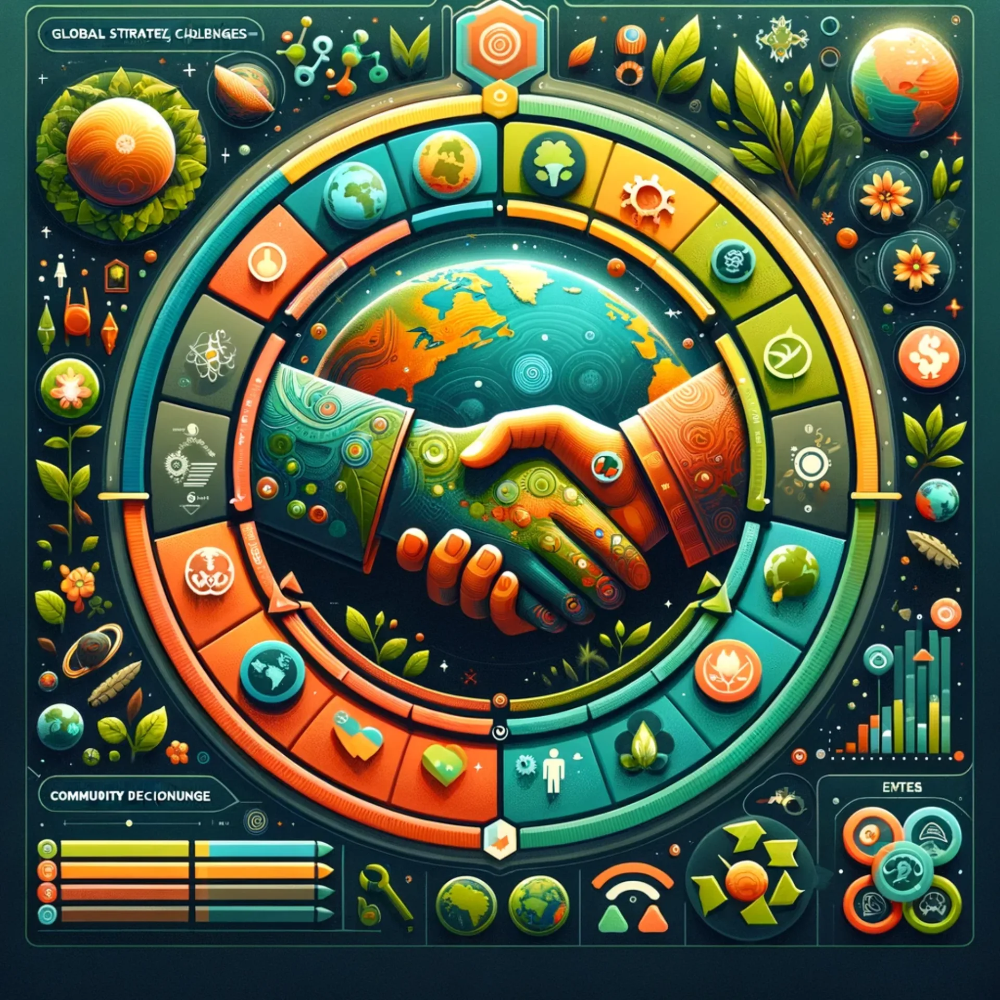
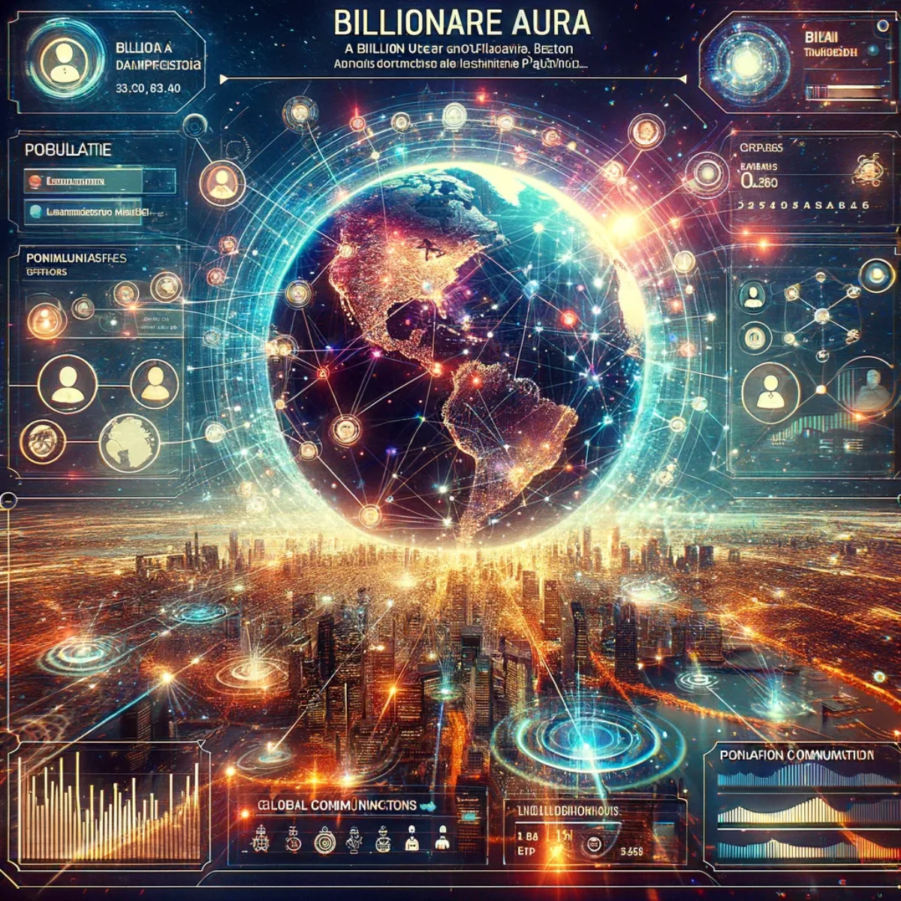
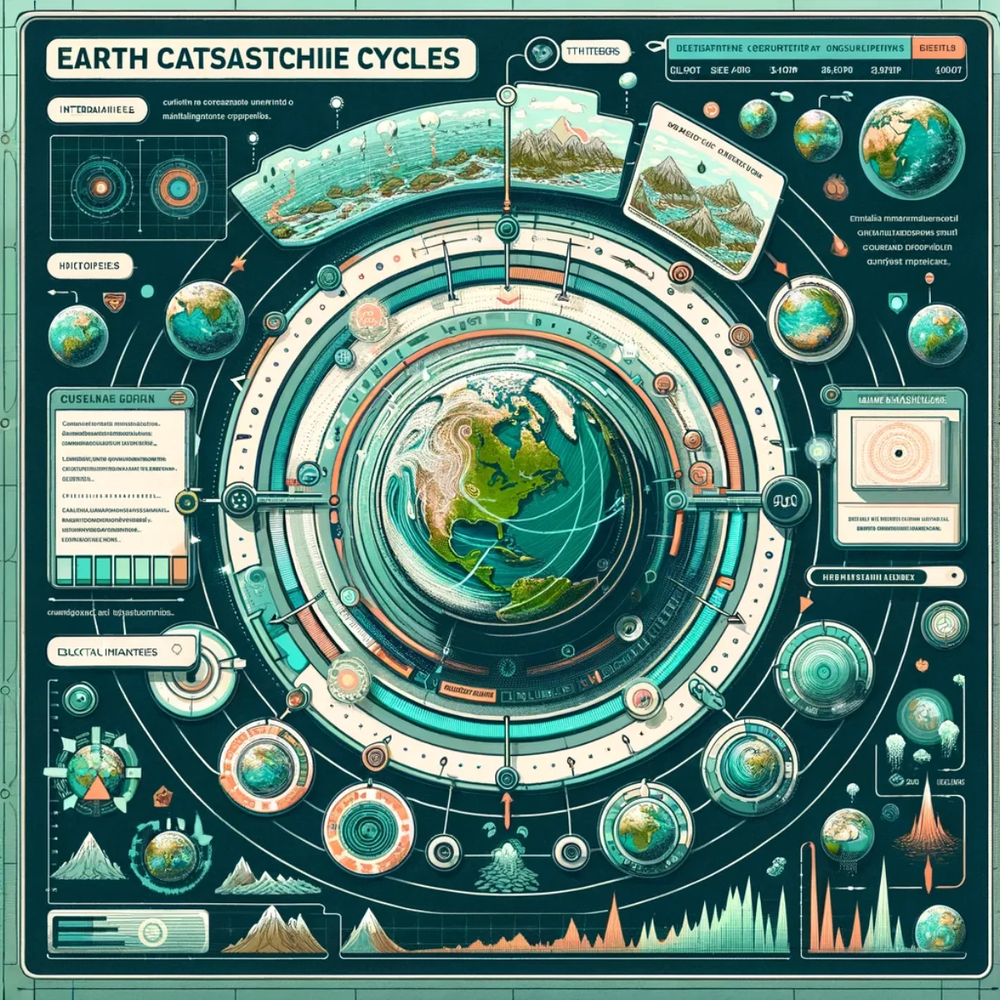
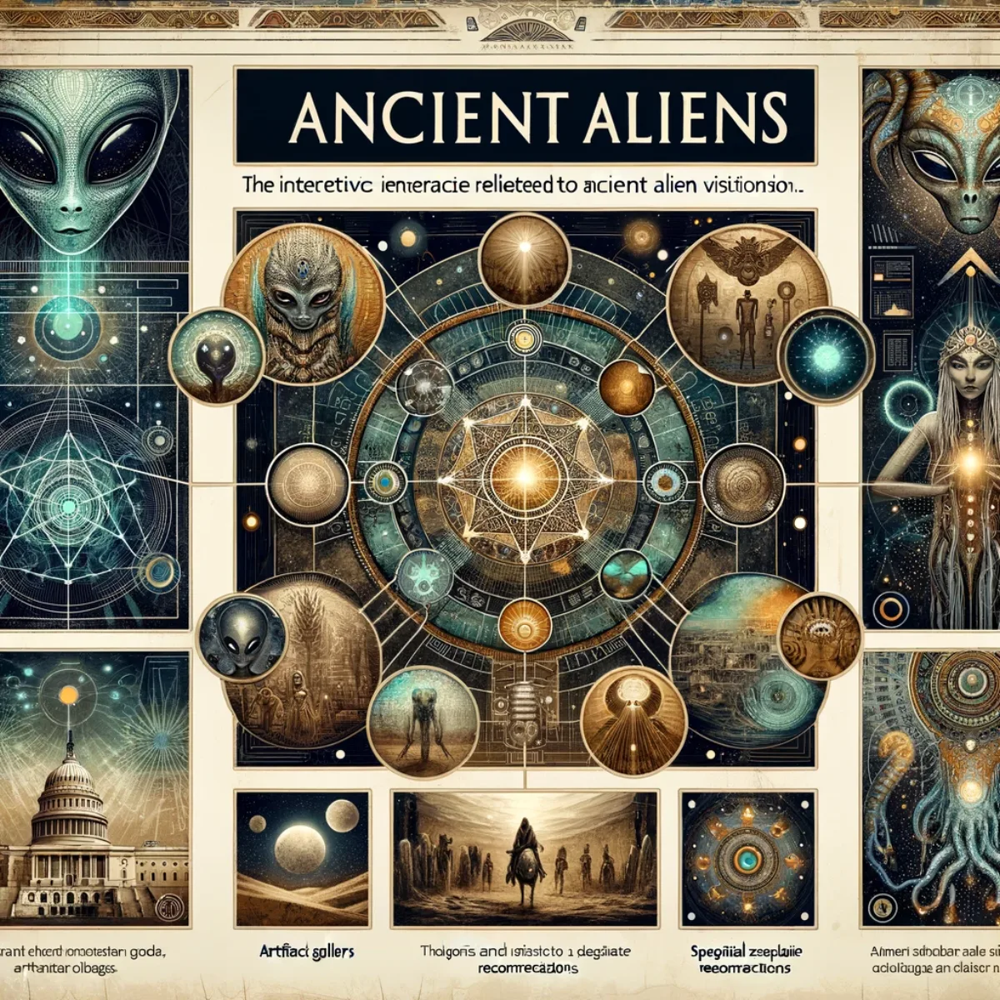
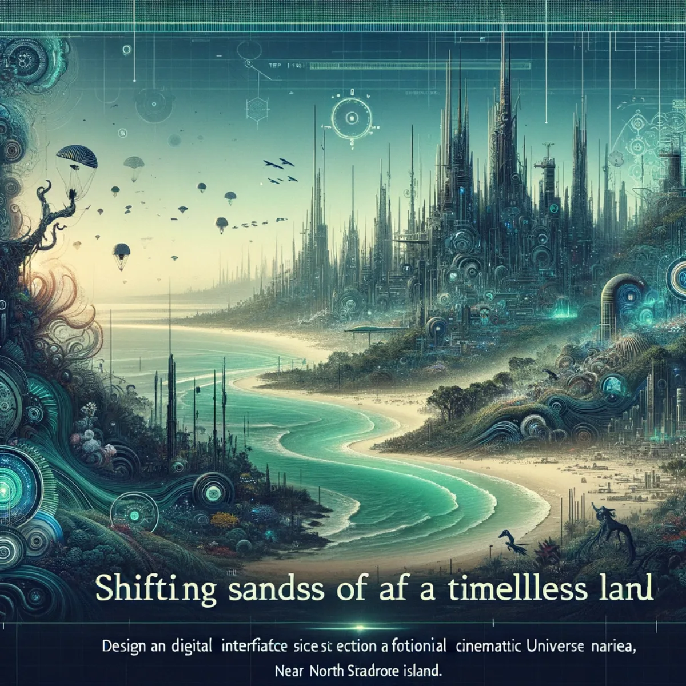
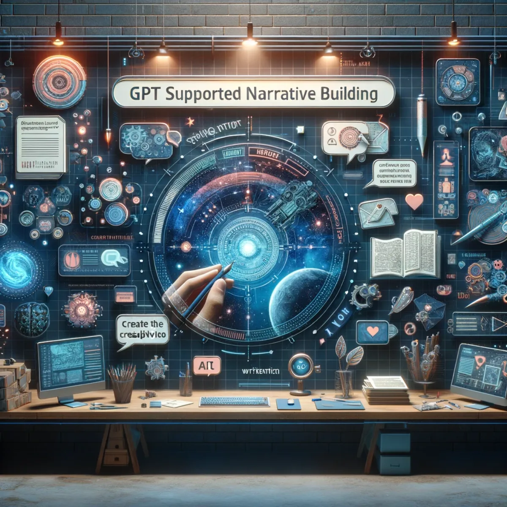

Pathways / Events, music & play
Gamification of Life
Turn everyday life into meaningful play: worlds you build and own, where your choices ripple across virtual ecosystems and the real one too, evolving as you do.

Play your part in shaping tomorrow
G.A.J.R.A. Earth
G.A.J.R.A. Earth is more than an association; it's a game and a platform you help build, where your actions shape the future of the planet. Take on interactive challenges, make decisions that ripple across virtual ecosystems, and watch collective strategic play change real-world outcomes. This is a world you own a piece of and shape to your own community rather than rent from big tech, one that grows as more people join and your choices feed a larger story. Play alongside a community committed to joyful responsible abundance on Earth, and become an agent of change. Visit gajra.earth.
Reaching over one million people
Millionaire Aura
Millionaire Aura isn't a measure of wealth but of collective action: a ripple that touches over a million lives, sparking change and growing a community dedicated to social and environmental good. You build your own place in that network rather than rent a spot on someone else's platform, and each person becomes a beacon for change in a movement that values people and planet. It's a commitment to unity, inspiring action and transformative impact, proof that together we are an unstoppable force for good.

Reaching over one billion people
Billionaire Aura
Billionaire Aura takes you into high-stakes strategy and philanthropy. Build your own empire and make philanthropic choices that echo through your virtual dynasty, from innovative start-ups to monumental charity projects, every choice expanding your influence. It's a world you own and shape, custom to the story you want to tell, teaching the balance between building wealth and social impact and inviting you to redefine what it means to be a billionaire in today's world.

Survive, adapt, thrive: the cycle continues
Earth Catastrophe Cycles
Earth Catastrophe Cycles is a survival game you make your own, testing you against nature's most extreme events. Manage resources, build resilient communities, and lead recovery in the aftermath of environmental upheaval. As you progress you unlock the secrets of past civilisations, learning from their successes and failures. It's a world that grows with you and your choices, where you find the strength in unity and innovation and come through the cycles of regeneration.

Unravel mysteries, reveal ancient cosmic connections
Ancient Aliens
Ancient Aliens is a world where history and myth intertwine, and you build your own path through it. Explore ancient sites, decipher extraterrestrial clues, and unlock the secrets of civilisations long gone. It's a journey through time you shape yourself, blending archaeological discovery with the thrill of uncovering otherworldly influences on Earth's past, connecting the dots of the universe's greatest mysteries and revealing truths hidden for eons.

Dive into the crystal city of Quandamooka Country
Shifting Sands of a Timeless Land
Shifting Sands of a Timeless Land is the first chapter of an epic set in the mystical subterranean crystal city of Quandamooka Country. Journey beneath the sub-tropical waters of Brisbane's Moreton Bay, gliding past North Stradbroke Island to the edge of the continental shelf. Here lies a tale of ancient lore and futuristic vision, a saga where the past interlaces with the possible, and one you help carry forward in your own way. Feel the deep connection between the land and its people, the ebb and flow of time, and the enduring spirit of a civilisation as resplendent as the stars above.

Weave worlds with words
GPT Supported Narrative Building
GPT Supported Narrative Building is where you build your own storytelling setup, generative AI meeting the artistry of the tale. Seasoned author or first-time writer, you shape a tool that helps you craft compelling narratives with ease. Let it be your muse as you work through plots, develop characters and bring stories to life, and keep it as your own: a partner custom to your voice that grows with you, helping you past writer's block with rich, imaginative detail, rather than a product you rent.
Keep exploring